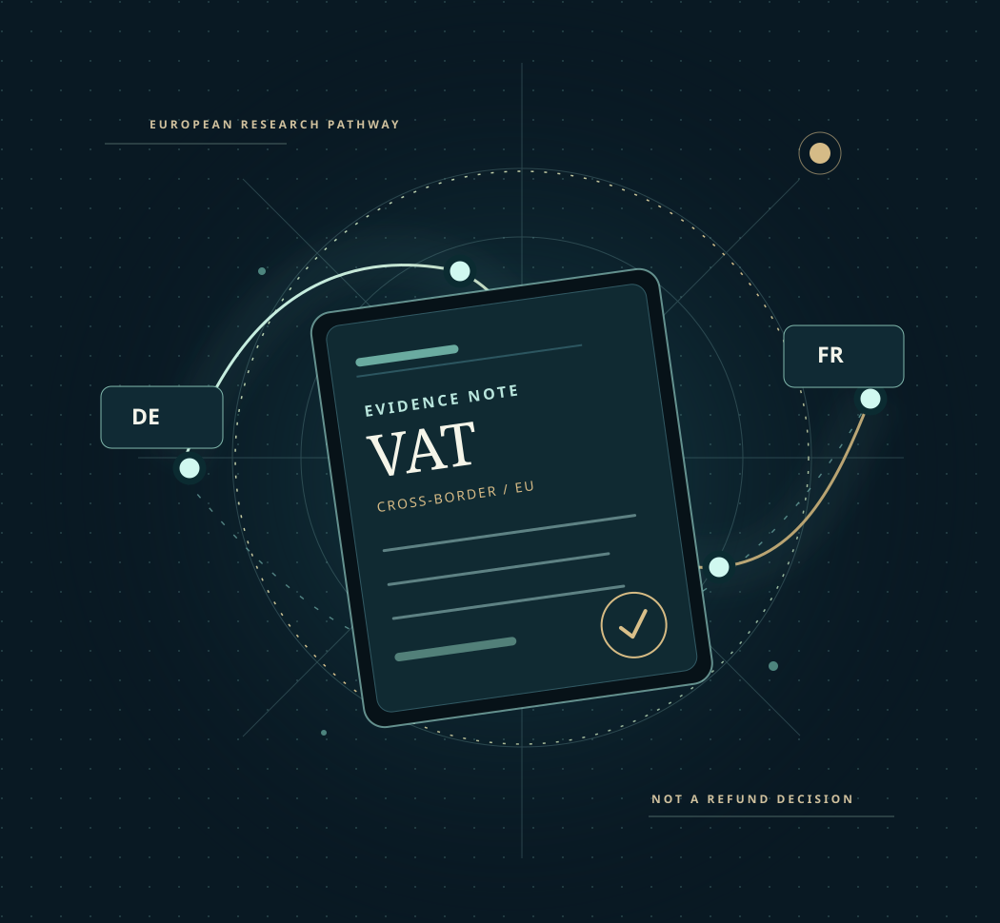

FICTIONAL DATA ONLY
The invisible side
of cross-border VAT.
Every business expense leaves a trail. Tax Genie reveals the questions, rules and evidence behind it — before anyone mistakes an invoice for a refund.
SYNTHETIC INTELLIGENCE LAB — no actual VAT eligibility, refunds, filings, or client documents

to research brief.Investigate. Verify. Then decide.
Choose the question. Explore the evidence.
Three fictional case journeys. No real customer information.
Investigate your fictional route.
No hidden eligibility score. Every missing fact remains visible.
01 · Research scenario
Enter a valid fictional amount between €0 and €10,000,000, with no more than two decimal places.
No personal data, actual invoices, tax identification numbers or client amounts. Input stays inside this browser tab and is not transmitted by Tax Genie.
02 · Evidence-first result
See what the scenario cannot prove.
These findings are generated from your fictional selections and general route checks. They identify research questions, not refund eligibility, national-law conclusions, or actual recoverable VAT.
Turn uncertainty
into a checklist.
Mark the research questions you've explored. These are not verified documents or eligibility decisions.
RESEARCH DOSSIER / 001SAMPLE
DE FR
What must be verified before a real claim?
Before evaluating any real business case, verify the claimant's establishment and VAT status, the transaction and expense category, qualifying period, national exclusions, applicable invoice evidence and official submission channel. The current screen does none of these validations. It is a research navigation tool only.
Beyond a calculator.
A research operating system.
Explore the proposed service directions. This is a product roadmap, not a claim that legal verification or live client processing is already available.
Trace the route.
See the unknowns.
Explore whether a hypothetical EU cross-border expense belongs in a particular research pathway. Surface the next questions without asserting VAT recovery eligibility.
Explore first. Verify before acting.
Explore
Use fictional inputs to understand an EU VAT research route and general application rules.
Evidence mapping
Identify unknowns: business status, expense type, filing period and applicable national rules.
Discovery
Ask about a possible pilot. No actual invoice or taxpayer documents are accepted through this website.
Interested in an evidence-first VAT workflow?
Tell us which cross-border process needs better visibility. We are validating the research product, not offering a guaranteed VAT refund service.
Official references
Built for clearer decisions, not faster guesses.
Tax Genie is an early research pilot by Proof & Signal. Its purpose is to make uncertainty visible before teams commit to a VAT recovery workflow. It does not act as a tax adviser or submit refunds.